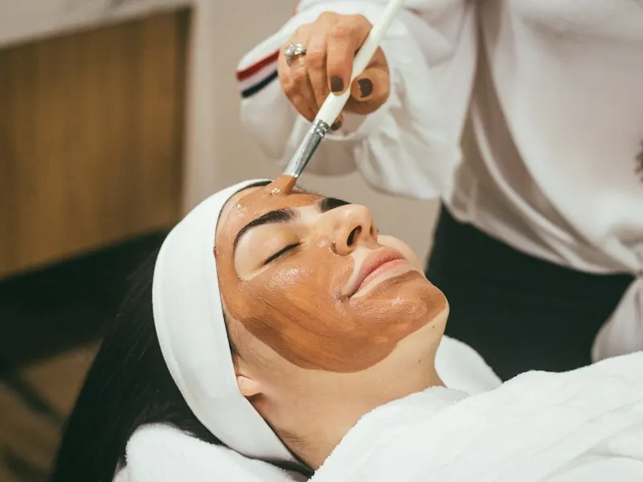
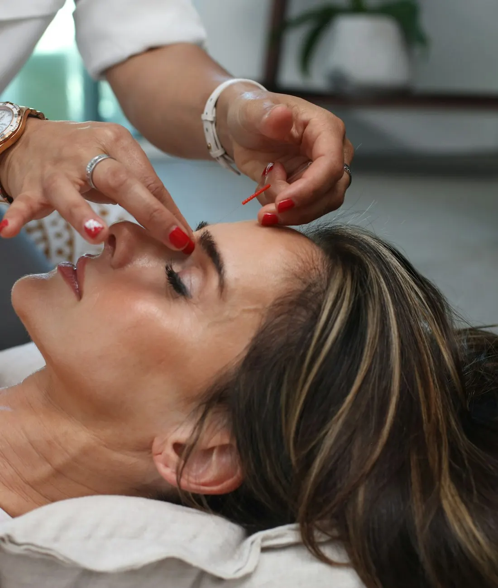
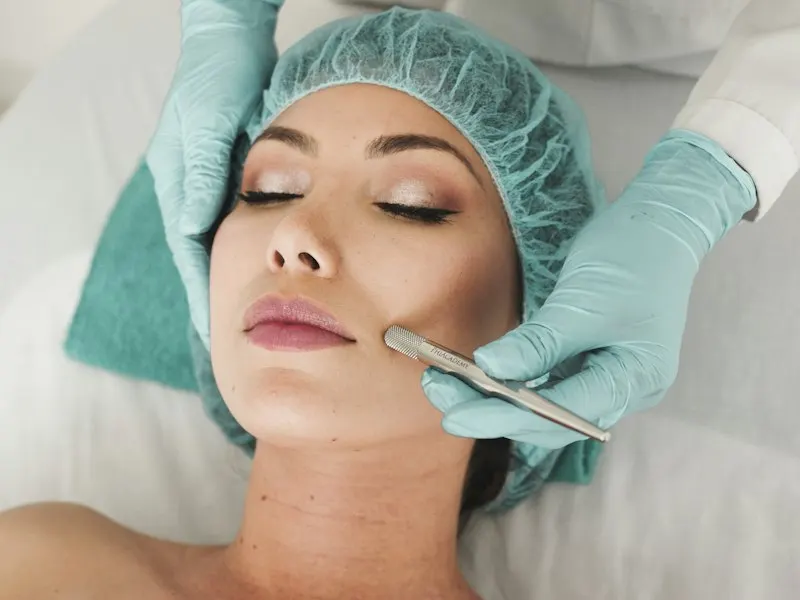
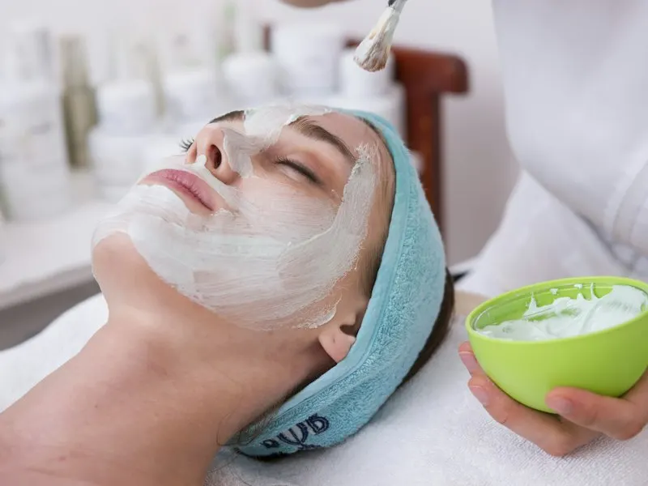
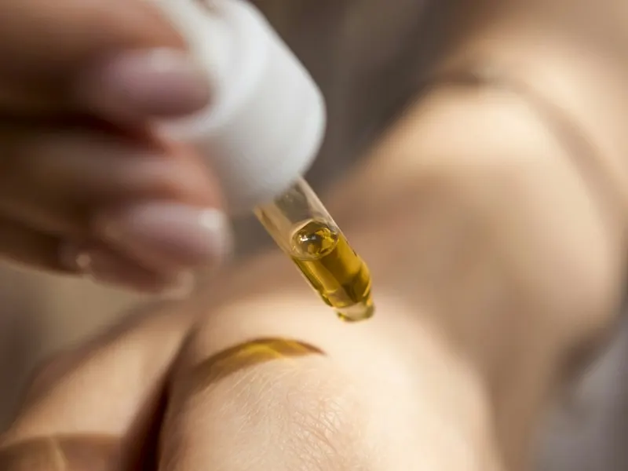
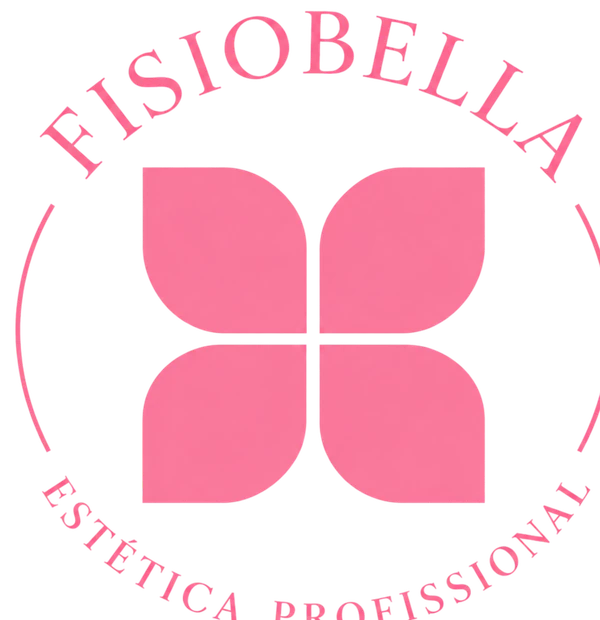

Rosto
Procedimentos Faciais
Protocolos para rejuvenescimento, textura, manchas e viço da pele, combinando técnicas manuais e tecnologias para cada tipo de pele.
Quero saber mais →Há 18 anos na Zona Norte de São Paulo
Tratamentos faciais e corporais com tecnologia de ponta, protocolos personalizados e o cuidado de uma equipe que acompanha cada resultado de perto.

Nossos destaques
Os procedimentos mais procurados pelas nossas pacientes, sempre com avaliação individual antes de qualquer indicação.

Protocolos para rejuvenescimento, textura, manchas e viço da pele, combinando técnicas manuais e tecnologias para cada tipo de pele.
Quero saber mais →
Suaviza rugas de expressão da testa, entre as sobrancelhas e ao redor dos olhos, com resultado natural.
Quero saber mais →Estimula o próprio organismo a produzir colágeno, melhorando firmeza, sustentação e qualidade da pele.
Quero saber mais →
Renovação profunda da pele: atenua cicatrizes de acne, linhas finas, poros dilatados e manchas.
Quero saber mais →
O famoso “BB Laser”: uniformiza o tom, clareia manchas e melasma e devolve o glow com recuperação rápida.
Quero saber mais →Todos os procedimentos
Protocolos personalizados para rejuvenescimento, manchas, textura e viço da pele.
Agendar →Toxina botulínica para suavizar rugas de expressão e prevenir novas linhas.
Agendar →Mais firmeza e sustentação com estímulo natural de colágeno.
Agendar →Ácido hialurônico para repor volume, contornar e harmonizar traços com naturalidade.
Agendar →Renovação profunda para cicatrizes de acne, linhas finas, poros e textura.
Agendar →Uniformiza o tom, trata manchas e melasma e dá luminosidade à pele.
Agendar →Efeito lifting sem cortes: trata flacidez do rosto, pescoço e papada.
Agendar →Congelamento controlado das células de gordura para reduzir medidas sem cirurgia.
Agendar →Plano personalizado combinando tecnologias para reduzir gordura em áreas específicas.
Agendar →Tratamento personalizado para melhorar o aspecto e a textura da pele com celulite.
Agendar →Firmeza para abdômen, braços, pernas e glúteos com protocolo sob medida.
Agendar →Reduz inchaço e retenção de líquidos, com sensação imediata de leveza.
Agendar →Acelera a recuperação após cirurgias plásticas, reduzindo edema e fibroses.
Agendar →Alívio do inchaço nas pernas e mais conforto em cada fase da gestação.
Agendar →Na avaliação indicamos o tratamento ideal para o seu objetivo.
Agendar avaliaçãoProtocolos personalizados
Para gordura localizada, celulite e flacidez, montamos um plano exclusivo depois de uma avaliação detalhada: combinamos tecnologias, drenagem e acompanhamento de medidas para você enxergar a evolução sessão a sessão.
Sobre a Fisiobella
Há 18 anos a Fisiobella cuida da beleza e da autoestima de mulheres na Zona Norte de São Paulo. Nascemos da fisioterapia e da estética, e é por isso que olhamos para cada paciente por inteiro: saúde, bem-estar e a forma como você se sente no espelho.
Aqui você é recebida em um ambiente acolhedor, passa por uma avaliação honesta e só faz o que realmente faz sentido para você.

Veja antes e depois, bastidores e depoimentos das nossas pacientes no Instagram.
@esteticafisiobella no InstagramDúvidas frequentes
Conversamos sobre seus objetivos, analisamos pele ou corpo e explicamos quais tratamentos fazem sentido para você, quantas sessões são indicadas e quais cuidados tomar. Agende pelo WhatsApp.
O Botox relaxa músculos para suavizar rugas de expressão. O bioestimulador estimula a produção de colágeno, melhorando firmeza e qualidade da pele. Muitas vezes os dois se complementam; na avaliação indicamos o melhor caminho.
O CO2 fracionado é indicado para renovação mais profunda (cicatrizes de acne, textura, rugas finas). O Lavieen é mais suave, com recuperação rápida, ótimo para manchas, melasma e luminosidade. A escolha depende da sua pele e do seu objetivo.
Sim. Temos drenagem específica para gestantes, com técnica e posicionamento adaptados para cada fase da gestação, sempre respeitando a liberação médica.
De segunda a sexta, das 8h às 21h, na Praça Rufus King Lane, 34, Vila Aurora (Zona Norte de São Paulo).
Venha nos visitar